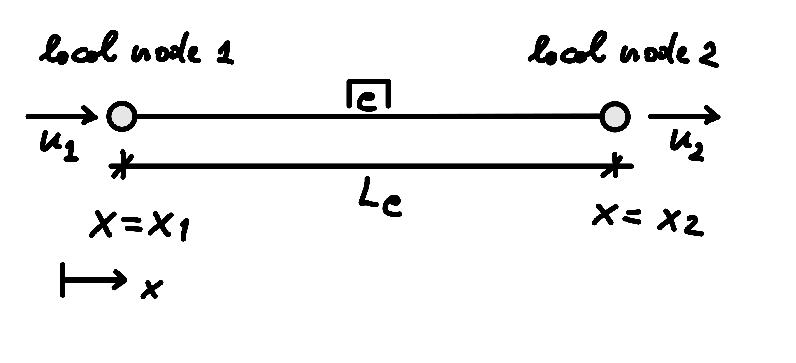
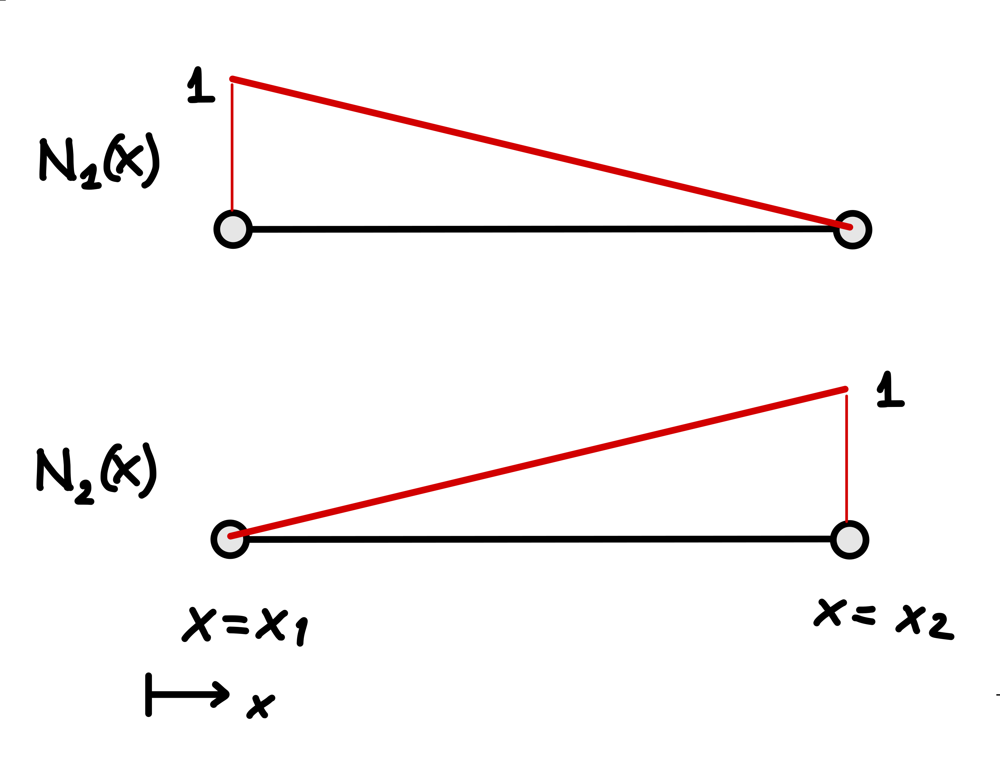

10 The two-node linear bar element
The previous chapter ended with the finite-dimensional Galerkin problem: find
\[ u^h\in S^h \]
such that
\[ \int_0^L (w^h)'EA(u^h)'\,dx = \int_0^L w^h q\,dx + w^h(L)\bar F \qquad \forall\,w^h\in V^h. \]
The trial and test spaces are now finite-dimensional, but the basis functions used to construct them have not yet been specified. This chapter answers that question using the simplest continuum finite element: the two-node linear bar element.
Despite its simplicity, this element introduces the main ideas that will recur throughout the finite element method: interpolation, shape functions, nodal degrees of freedom, strain–displacement relations, element stiffness matrices, and consistent element load vectors.
The key difference from the spring system of Part II is the origin of the element quantities. For a discrete spring, the stiffness relation follows directly from the spring kinematics, constitutive behavior, and equilibrium, while the applied force in that example was already prescribed as a global nodal load.
For the continuum bar, the element stiffness matrix and the element load vectors associated with distributed and boundary loading are derived systematically from the finite-dimensional weak formulation.
10.1 From the weak form to an element approximation
Consider the one-dimensional domain
\[ \Omega=(0,L). \]
To construct a finite element approximation, the domain is divided into subdomains called elements. In one dimension, these elements are simply intervals. If the mesh contains \(n_e\) elements, their interiors do not overlap and, together with their shared boundaries, they cover the closure of the domain:
\[ \overline{\Omega} = \bigcup_{e=1}^{n_e} \overline{\Omega}_e, \] where neighboring elements meet at discrete points called nodes.
The finite-dimensional weak form can correspondingly be written as a sum of element contributions. For example, the internal term becomes
\[ \int_\Omega (w^h)'EA(u^h)'\,dx = \sum_{e=1}^{n_e} \int_{\Omega_e} (w^h)'EA(u^h)'\,dx. \]
Similarly, the contribution of a distributed load can be written as
\[ \int_\Omega w^h q\,dx = \sum_{e=1}^{n_e} \int_{\Omega_e} w^h q\,dx. \]
This decomposition introduces no additional approximation: it simply expresses the global integrals as sums of integrals over the elements. The finite-dimensional approximation was introduced abstractly in the previous chapter through the spaces \(S^h\) and \(V^h\); it becomes concrete at the element level when the approximate displacement and test fields are represented by nodal values and shape functions.
The element stiffness matrices and load vectors can then be derived separately for each element from these contributions. Once they have been obtained, their contributions are assembled into the global system using the same local-to-global degree-of-freedom mapping and assembly procedure introduced for the spring systems in Part II.
10.2 The two-node bar element
Consider a generic element \(e\) with local node 1 located at \(x_1\) and local node 2 located at \(x_2\). For the present derivation, the local nodes are ordered from left to right, so that
\[ x_1<x_2. \]
The element interior is
\[ \Omega_e=(x_1,x_2), \]
while its closure,
\[ \overline{\Omega}_e=[x_1,x_2], \]
also includes the two element nodes. The element length is therefore
\[ L_e=x_2-x_1>0. \]

The degrees of freedom of the element are the axial displacements of its two nodes. We denote them by
\[ u_1=u^h(x_1), \qquad u_2=u^h(x_2), \]
where the superscript \(h\) identifies the finite-dimensional approximation.
The element nodal displacement vector is therefore
\[ \boxed{ \mathbf{u}_e = \begin{bmatrix} u_1\\ u_2 \end{bmatrix}. } \]
The subscripts \(1\) and \(2\) refer here to the local node numbering of the element. When many elements are assembled, these local nodes are associated with global nodes through the element connectivity, exactly as in the discrete systems of Part II.
Knowing only \(u_1\) and \(u_2\) does not yet define the displacement at points inside the element. The next step is therefore to construct an approximation \(u^h(x)\) that interpolates these two nodal values throughout \(\Omega_e\).
10.3 Linear interpolation and shape functions
Within a two-node bar element, the displacement is approximated by a linear function of the coordinate \(x\):
\[ u^h(x)=a_0+a_1x, \]
where \(a_0\) and \(a_1\) are coefficients to be determined from the two nodal displacements. This is the simplest nontrivial interpolation compatible with a continuous displacement field. A constant displacement approximation would have zero strain within each element and, if continuity were enforced between neighboring elements, would reduce to a constant displacement over the entire connected mesh.
The approximation must reproduce the nodal values,
\[ u^h(x_1)=u_1, \qquad u^h(x_2)=u_2. \]
Substituting the linear approximation gives
\[ u_1=a_0+a_1x_1, \qquad u_2=a_0+a_1x_2. \]
Subtracting the first equation from the second,
\[ u_2-u_1 = a_1(x_2-x_1) = a_1L_e, \]
so that
\[ a_1=\frac{u_2-u_1}{L_e}. \]
Using the first nodal condition then gives
\[ a_0 = u_1-\frac{u_2-u_1}{L_e}x_1. \]
Substituting these coefficients back into the approximation and rearranging the terms according to the nodal displacements gives
\[ u^h(x) = \frac{x_2-x}{L_e}u_1 + \frac{x-x_1}{L_e}u_2. \]
We define the two shape functions as
\[ N_1(x) = \frac{x_2-x}{L_e}, \qquad N_2(x) = \frac{x-x_1}{L_e}. \]
The element shape functions \(N_1\) and \(N_2\) should not be confused with the scalar axial resultant \(N(x)\) introduced in the previous chapters.
The displacement approximation can therefore be written as \[ \boxed{ u^h(x) = N_1(x)u_1 + N_2(x)u_2. } \]
The functions \(N_i(x)\) are called shape functions because each one of them describes the spatial shape of the displacement field produced by assigning a unit value to one nodal degree of freedom while setting the others to zero.
The shape functions therefore determine how the nodal displacement values contribute to the displacement at any point inside the element.

The shape functions satisfy the interpolation property
\[ N_i(x_j)=\delta_{ij}, \]
where \(\delta_{ij}\) is the Kronecker delta. Explicitly,
\[ N_1(x_1)=1, \qquad N_1(x_2)=0, \]
and
\[ N_2(x_1)=0, \qquad N_2(x_2)=1. \]
This property ensures that the approximation reproduces the corresponding nodal displacement exactly.
The two shape functions also satisfy
\[ \boxed{ N_1(x)+N_2(x)=1. } \]
This property is known as partition of unity. It ensures, among other things, that the element can reproduce a constant displacement field exactly. Indeed, if both nodes undergo the same displacement \(c\),
\[ u_1=u_2=c, \]
then
\[ u^h(x) = N_1c+N_2c = \left(N_1+N_2\right)c = c. \]
A rigid translation is therefore represented exactly by the element.
Introducing the row vector of shape functions,
\[ \mathbf{N}(x) = \begin{bmatrix} N_1(x) & N_2(x) \end{bmatrix}, \]
and recalling the element displacement vector
\[ \mathbf{u}_e = \begin{bmatrix} u_1\\ u_2 \end{bmatrix}, \]
the displacement approximation takes the compact form
\[ \boxed{ u^h(x)=\mathbf{N}(x)\mathbf{u}_e. } \]
The displacement field is now defined throughout the element using only the two nodal degrees of freedom. The next step is to determine the strain field associated with this interpolation.
10.4 From displacement to strain
For the one-dimensional bar model, the axial strain is the derivative of the displacement field,
\[ \varepsilon^h(x) = \frac{du^h}{dx}. \]
Using the finite element interpolation
\[ u^h(x) = \mathbf{N}(x)\mathbf{u}_e, \]
we obtain
\[ \varepsilon^h(x) = \frac{d\mathbf{N}}{dx}\mathbf{u}_e. \]
We define the strain–displacement matrix
\[ \boxed{ \mathbf{B}(x) = \frac{d\mathbf{N}}{dx} } \]
so that
\[ \boxed{ \varepsilon^h(x) = \mathbf{B}(x)\mathbf{u}_e. } \]
For the two-node linear bar element,
\[ N_1(x)=\frac{x_2-x}{L_e}, \qquad N_2(x)=\frac{x-x_1}{L_e}, \]
and therefore
\[ \frac{dN_1}{dx} = -\frac{1}{L_e}, \qquad \frac{dN_2}{dx} = \frac{1}{L_e}. \]
Hence,
\[ \boxed{ \mathbf{B} = \begin{bmatrix} -\dfrac{1}{L_e} & \dfrac{1}{L_e} \end{bmatrix}. } \]
Because \(\mathbf{B}\) is constant over the element, the strain field is also constant:
\[ \varepsilon^h = \frac{u_2-u_1}{L_e}. \]
This result has a direct mechanical interpretation: the strain depends only on the relative displacement of the two nodes. If both nodes undergo the same translation,
\[ u_1=u_2, \]
then
\[ \varepsilon^h=0. \]
The element therefore produces no strain under a rigid translation.
The strain–displacement relation is the quantity needed next in the weak form and in the derivation of the element stiffness matrix.
10.5 Approximating the test function
The finite-dimensional weak formulation involves both the approximate displacement field \(u^h\) and the approximate test function \(w^h\). The element interpolation for the displacement has already been written as
\[ u^h(x) = \mathbf{N}(x)\mathbf{u}_e. \]
In the Bubnov–Galerkin formulation introduced in the previous chapter, the test function is represented over the element using the same shape functions,
\[ w^h(x) = \mathbf{N}(x)\mathbf{w}_e, \]
where
\[ \mathbf{w}_e = \begin{bmatrix} w_1\\ w_2 \end{bmatrix} \]
contains the nodal values of the test function over the element.
Differentiating gives
\[ \frac{dw^h}{dx} = \frac{d\mathbf{N}}{dx}\mathbf{w}_e = \mathbf{B}\mathbf{w}_e. \]
Thus, over the element,
\[ \boxed{ u^h=\mathbf{N}\mathbf{u}_e, \qquad w^h=\mathbf{N}\mathbf{w}_e, } \]
and
\[ \boxed{ \frac{du^h}{dx}=\mathbf{B}\mathbf{u}_e, \qquad \frac{dw^h}{dx}=\mathbf{B}\mathbf{w}_e. } \]
The vectors \(\mathbf{u}_e\) and \(\mathbf{w}_e\) play different roles. The components of \(\mathbf{u}_e\) are the element nodal displacements, whereas \(\mathbf{w}_e\) represents admissible nodal variations over the element. These local quantities will contribute, through assembly, to the discrete global equilibrium equations.
10.6 The element contribution to the weak form
Consider an element \(\Omega_e\). Its contribution to the internal term of the weak form is
\[ \int_{\Omega_e} \frac{dw^h}{dx} EA \frac{du^h}{dx} \,dx. \]
Substituting the finite element approximations gives
\[ \int_{\Omega_e} \left( \mathbf{B}\mathbf{w}_e \right) EA \left( \mathbf{B}\mathbf{u}_e \right) \,dx. \]
In this one-dimensional problem, \(\mathbf{B}\mathbf{w}_e\) and \(\mathbf{B}\mathbf{u}_e\) are scalars. A scalar is equal to its transpose, so the integrand can equivalently be written as
\[ \left( \mathbf{B}\mathbf{w}_e \right)^{\mathsf T} EA \left( \mathbf{B}\mathbf{u}_e \right). \]
Using
\[ \left( \mathbf{B}\mathbf{w}_e \right)^{\mathsf T} = \mathbf{w}_e^{\mathsf T}\mathbf{B}^{\mathsf T}, \]
and noting that the element nodal vectors do not depend on \(x\), the element contribution becomes
\[ \mathbf{w}_e^{\mathsf T} \left[ \int_{\Omega_e} \mathbf{B}^{\mathsf T} EA \mathbf{B} \,dx \right] \mathbf{u}_e. \]
The matrix between square brackets is called the element stiffness matrix: \[ \boxed{ \mathbf{K}_e = \int_{\Omega_e} \mathbf{B}^{\mathsf T} EA \mathbf{B} \,dx. } \]
The internal contribution to the weak form can therefore be written compactly as
\[ \mathbf{w}_e^{\mathsf T} \mathbf{K}_e \mathbf{u}_e. \]
Similarly, the contribution of a distributed axial load is
\[ \int_{\Omega_e} w^h q\,dx. \]
Using
\[ w^h=\mathbf{N}\mathbf{w}_e, \]
we obtain
\[ \mathbf{w}_e^{\mathsf T} \left[ \int_{\Omega_e} \mathbf{N}^{\mathsf T}q\,dx \right]. \]
We therefore define the consistent element load vector
\[ \boxed{ \mathbf{f}_e^q = \int_{\Omega_e} \mathbf{N}^{\mathsf T}q\,dx. } \]
The distributed physical load \(q(x)\) has thus been converted into an equivalent set of nodal forces through the same shape functions used to approximate the displacement and test fields.
At this stage, the internal and distributed-load contributions of element \(e\) can be combined in the finite-dimensional weak statement as
\[ \mathbf{w}_e^{\mathsf T} \left( \mathbf{K}_e\mathbf{u}_e - \mathbf{f}_e^q \right). \]
This is an element contribution to the discrete weak statement, not an independent equilibrium equation for the element. Contributions from all elements must first be assembled before the global equilibrium equations can be obtained.
The next step is to evaluate \(\mathbf{K}_e\) and \(\mathbf{f}_e^q\) in closed form for constant material properties, cross-sectional area, and distributed load.
10.7 Closed-form element stiffness and distributed load vector
For the two-node linear bar element,
\[ \mathbf{B} = \begin{bmatrix} -\dfrac{1}{L_e} & \dfrac{1}{L_e} \end{bmatrix}. \]
The element stiffness matrix derived from the weak form is
\[ \mathbf{K}_e = \int_{\Omega_e} \mathbf{B}^{\mathsf T} EA \mathbf{B} \,dx. \]
For the present two-node linear element, \(\mathbf{B}\) is constant. If \(E\) and \(A\) are also constant within the element, they can be taken outside the integral, giving
\[ \mathbf{K}_e = EA \mathbf{B}^{\mathsf T} \mathbf{B} \int_{x_1}^{x_2}dx. \]
Since
\[ \int_{x_1}^{x_2}dx=L_e, \]
and
\[ \mathbf{B}^{\mathsf T}\mathbf{B} = \frac{1}{L_e^2} \begin{bmatrix} 1 & -1\\ -1 & 1 \end{bmatrix}, \]
we obtain
\[ \boxed{ \mathbf{K}_e = \frac{EA}{L_e} \begin{bmatrix} 1 & -1\\ -1 & 1 \end{bmatrix}. } \]
This matrix has exactly the same algebraic form as the stiffness matrix of the two-node spring element introduced in Part II, with the equivalent axial stiffness
\[ k_e=\frac{EA}{L_e}. \]
The similarity is important, but the origin of the two matrices is different. For the spring element, \(k_e\) was supplied directly as the stiffness parameter of an already discrete mechanical element. For the bar element, \(EA/L_e\) emerges from the continuum constitutive relation, the element geometry, the displacement interpolation, and the weak form.
10.7.1 Distributed load vector
The element contribution of a distributed axial load is
\[ \mathbf{f}_e^q = \int_{\Omega_e} \mathbf{N}^{\mathsf T}q\,dx. \]
For a constant distributed load of intensity \(q\),
\[ \mathbf{f}_e^q = q \int_{x_1}^{x_2} \begin{bmatrix} N_1(x)\\ N_2(x) \end{bmatrix} dx. \]
Using
\[ N_1(x)=\frac{x_2-x}{L_e}, \qquad N_2(x)=\frac{x-x_1}{L_e}, \]
the two integrals are
\[ \int_{x_1}^{x_2}N_1(x)\,dx = \frac{L_e}{2}, \]
and
\[ \int_{x_1}^{x_2}N_2(x)\,dx = \frac{L_e}{2}. \]
Therefore,
\[ \boxed{ \mathbf{f}_e^q = \frac{qL_e}{2} \begin{bmatrix} 1\\ 1 \end{bmatrix}. } \]
The total distributed load acting over the element is
\[ qL_e, \]
and the two nodal forces sum to exactly this value,
\[ \begin{bmatrix} 1 & 1 \end{bmatrix} \mathbf{f}_e^q = qL_e. \]
For a constant load and a two-node linear element, symmetry therefore leads to one half of the total distributed load being associated with each node.
The vector \(\mathbf{f}_e^q\) is called a consistent element load vector because it is obtained from the same finite element interpolation used in the weak form.
For a nonuniform distributed load \(q(x)\), the same definition remains valid,
\[ \boxed{ \mathbf{f}_e^q = \int_{\Omega_e} \mathbf{N}^{\mathsf T}q(x)\,dx, } \]
but the two nodal contributions are not generally equal.
10.8 Boundary forces
The weak form also contains contributions from forces prescribed on the traction boundary. Consider an element whose right endpoint \(x_2\) lies on the traction boundary where the prescribed axial force \(\bar F\) acts in the positive \(x\) direction.
The corresponding contribution to the weak form is
\[ w^h(x_2)\bar F. \]
Using the interpolation of the test function,
\[ w^h(x_2) = \mathbf{N}(x_2)\mathbf{w}_e, \]
and therefore
\[ w^h(x_2)\bar F = \mathbf{w}_e^{\mathsf T} \mathbf{N}^{\mathsf T}(x_2)\bar F. \]
For the two-node linear element,
\[ \mathbf{N}(x_2) = \begin{bmatrix} 0 & 1 \end{bmatrix}, \]
so the corresponding element force vector is
\[ \boxed{ \mathbf{f}_e^F = \mathbf{N}^{\mathsf T}(x_2)\bar F = \begin{bmatrix} 0\\ \bar F \end{bmatrix}. } \]
Unlike a distributed load, which must be converted into an element load vector through integration, a force prescribed directly at a node already acts on a nodal degree of freedom. Writing it here as \(\mathbf{f}_e^F\) expresses the natural-boundary contribution in the same element-level form as the other terms derived from the weak form. In an assembled finite element model, a force prescribed directly at a node may instead be added directly to the corresponding entry of the global load vector, as in the spring system of Part II.
Here, \(\mathbf{f}_e^F\) is retained because \(\bar F\) originates from the natural boundary term of the weak form and acts at the boundary node of this element. Concentrated forces prescribed at interior nodes are more naturally introduced directly as global nodal loads.
If both a distributed load and the end force are present, their contributions can be combined as
\[ \mathbf{f}_e = \mathbf{f}_e^q + \mathbf{f}_e^F. \]
As an example, consider the boundary element whose second node lies on the traction boundary. If the element is subjected to a uniform distributed load \(q\) and the prescribed boundary force \(\bar F\), its element load vector is
\[ \boxed{ \mathbf{f}_e = \frac{qL_e}{2} \begin{bmatrix} 1\\ 1 \end{bmatrix} + \begin{bmatrix} 0\\ \bar F \end{bmatrix}. } \]
Other element-level loading configurations lead to different element load vectors. Their nodal components are expressed in the element’s local degree-of-freedom ordering and are subsequently assembled into the corresponding global degrees of freedom.
10.9 From element contributions to the discrete equilibrium equations
At this point, each element provides a stiffness matrix \(\mathbf{K}_e\) and an external load vector \(\mathbf{f}_e\). Their contributions are assembled using the same local-to-global procedure introduced for the spring system in Part II.
Recall the element extraction matrix \(\mathbf{C}_e\). The local displacement vector is extracted from the global displacement vector as
\[ \boxed{ \mathbf{u}_e = \mathbf{C}_e\mathbf{u}. } \]
The nodal values of the test function are related to the global test vector by the same degree-of-freedom map:
\[ \boxed{ \mathbf{w}_e = \mathbf{C}_e\mathbf{w}. } \]
For the complete mesh, the finite-dimensional weak statement is obtained by summing the contributions of all elements,
\[ \sum_{e=1}^{n_e} \mathbf{w}_e^{\mathsf T} \left( \mathbf{K}_e\mathbf{u}_e - \mathbf{f}_e \right) = 0. \]
Substituting
\[ \mathbf{u}_e=\mathbf{C}_e\mathbf{u}, \qquad \mathbf{w}_e=\mathbf{C}_e\mathbf{w}, \]
gives
\[ \sum_{e=1}^{n_e} \mathbf{w}^{\mathsf T} \mathbf{C}_e^{\mathsf T} \left( \mathbf{K}_e\mathbf{C}_e\mathbf{u} - \mathbf{f}_e \right) = 0. \]
Collecting the global terms gives
\[ \mathbf{w}^{\mathsf T} \left[ \left( \sum_{e=1}^{n_e} \mathbf{C}_e^{\mathsf T} \mathbf{K}_e \mathbf{C}_e \right) \mathbf{u} - \sum_{e=1}^{n_e} \mathbf{C}_e^{\mathsf T} \mathbf{f}_e \right] = 0. \]
The assembled global stiffness matrix and load vector are therefore
\[ \boxed{ \mathbf{K} = \sum_{e=1}^{n_e} \mathbf{C}_e^{\mathsf T} \mathbf{K}_e \mathbf{C}_e, \qquad \mathbf{f} = \sum_{e=1}^{n_e} \mathbf{C}_e^{\mathsf T} \mathbf{f}_e. } \]
For the loading representation used here, the global load vector is obtained by assembling the element load vectors. If additional concentrated forces are prescribed directly at global nodes, their contributions are added to the corresponding entries of the assembled global load vector.
The stiffness-matrix assembly is exactly the operation introduced for the spring system in Part II. The load-vector expression is its vector counterpart: \(\mathbf{C}_e^{\mathsf T}\) scatters each element load vector to its corresponding global degrees of freedom, and contributions that map to the same global entry are added during assembly.
The assembled finite-dimensional weak statement can consequently be written as
\[ \boxed{ \mathbf{w}^{\mathsf T} \left( \mathbf{K}\mathbf{u} - \mathbf{f} \right) = 0 } \qquad \text{for every admissible } \mathbf{w}. \]
The admissible global nodal variations are arbitrary at free degrees of freedom and zero where displacement is prescribed. We therefore partition the global vectors and stiffness matrix into free and prescribed degrees of freedom:
\[ \mathbf{u} = \begin{bmatrix} \mathbf{u}_f\\ \mathbf{u}_c \end{bmatrix}, \qquad \mathbf{w} = \begin{bmatrix} \mathbf{w}_f\\ \mathbf{0} \end{bmatrix}, \qquad \mathbf{f} = \begin{bmatrix} \mathbf{f}_f\\ \mathbf{f}_c \end{bmatrix}. \]
The corresponding block partition of the stiffness matrix is
\[ \mathbf{K} = \begin{bmatrix} \mathbf{K}_{ff} & \mathbf{K}_{fc}\\ \mathbf{K}_{cf} & \mathbf{K}_{cc} \end{bmatrix}. \]
The zero block in \(\mathbf{w}\) reflects the requirement that admissible test functions vanish at prescribed displacement degrees of freedom.
The discrete weak statement then gives \[ \mathbf{w}_f^{\mathsf T} \left( \mathbf{K}_{ff}\mathbf{u}_f + \mathbf{K}_{fc}\mathbf{u}_c - \mathbf{f}_f \right) = 0 \qquad \text{for every } \mathbf{w}_f. \]
Because \(\mathbf{w}_f\) is arbitrary,
\[ \boxed{ \mathbf{K}_{ff}\mathbf{u}_f + \mathbf{K}_{fc}\mathbf{u}_c = \mathbf{f}_f. } \]
These are the equilibrium equations associated with the unknown displacement degrees of freedom. At the prescribed displacement degrees of freedom, the corresponding residual is
\[ \boxed{ \mathbf{r}_c = \mathbf{K}_{cf}\mathbf{u}_f + \mathbf{K}_{cc}\mathbf{u}_c - \mathbf{f}_c. } \]
These residual components are the reaction forces associated with the prescribed displacement degrees of freedom. As in the spring system of Part II, the reactions are recovered after the displacement solution has been obtained, using the original assembled stiffness matrix and global load vector, both retained before any algebraic reduction or modification used to enforce the prescribed displacements.
The bar problem considered so far, like the spring example in Part II, has a homogeneous prescribed displacement, so that
\[ \mathbf{u}_c=\mathbf{0}. \]
For this case, the free equilibrium equations reduce to
\[ \mathbf{K}_{ff}\mathbf{u}_f = \mathbf{f}_f. \]
The previous chapter also showed that the admissible trial space can accommodate nonzero prescribed displacements. If
\[ \mathbf{u}_c\neq\mathbf{0}, \]
the same partitioned equilibrium equations give
\[ \boxed{ \mathbf{K}_{ff}\mathbf{u}_f = \mathbf{f}_f - \mathbf{K}_{fc}\mathbf{u}_c. } \]
The known prescribed displacement therefore contributes an additional term to the right-hand side of the reduced equilibrium system.
It is useful to distinguish this reduced system from the original assembled global system. Defining
\[ \mathbf{K}_{\mathrm{red}} = \mathbf{K}_{ff}, \qquad \mathbf{f}_{\mathrm{red}} = \mathbf{f}_f - \mathbf{K}_{fc}\mathbf{u}_c, \]
the equations to be solved can be written as
\[ \boxed{ \mathbf{K}_{\mathrm{red}}\mathbf{u}_f = \mathbf{f}_{\mathrm{red}}. } \]
This has the same familiar algebraic structure as \(\mathbf{K}\mathbf{u}=\mathbf{f}\), while keeping the assembled global quantities distinct from the reduced system used for the solution.
The continuum formulation therefore leads to the same final algebraic structure as the direct stiffness method, while extending the boundary-condition treatment from the homogeneous case used in the spring example to prescribed displacements of general value.
The complete sequence from the continuum weak form to the algebraic system to be solved can therefore be summarized as
\[ \begin{array}{c} \text{weak form} \\[0.4em] \downarrow \\[0.4em] \text{finite-dimensional interpolation} \\[0.4em] \downarrow \\[0.4em] \mathbf{K}_e,\mathbf{f}_e \\[0.4em] \downarrow \\[0.4em] \text{assembly} \\[0.4em] \downarrow \\[0.4em] \text{assembled global system} \\[0.4em] \downarrow \\[0.4em] \text{algebraic treatment of prescribed displacements} \\[0.4em] \downarrow \\[0.4em] \text{reduced equilibrium system} \end{array} \]
The assembly procedure has not changed. What is new is that the element stiffness matrix and load vector have been derived systematically from the weak form of the continuum problem.
10.10 Mechanical properties of the element stiffness matrix
Several important properties of the element stiffness matrix can also be checked directly.
For the two-node linear bar,
\[ \mathbf{K}_e = \frac{EA}{L_e} \begin{bmatrix} 1 & -1\\ -1 & 1 \end{bmatrix}. \]
The matrix is symmetric,
\[ \boxed{ \mathbf{K}_e = \mathbf{K}_e^{\mathsf T}. } \]
More importantly, consider a rigid translation in which both nodes move by the same amount \(c\),
\[ \mathbf{u}_e = c \begin{bmatrix} 1\\ 1 \end{bmatrix}. \]
Then
\[ \mathbf{K}_e \mathbf{u}_e = \frac{EA}{L_e} \begin{bmatrix} 1 & -1\\ -1 & 1 \end{bmatrix} c \begin{bmatrix} 1\\ 1 \end{bmatrix} = \begin{bmatrix} 0\\ 0 \end{bmatrix}. \]
Thus,
\[ \boxed{ \mathbf{K}_e \begin{bmatrix} 1\\ 1 \end{bmatrix} = \mathbf{0}. } \]
This is the algebraic counterpart of the interpolation result obtained earlier: a rigid translation produces no strain and therefore no internal force.
The unconstrained element stiffness matrix is therefore singular because it contains a rigid-translation mode. This is not a defect: a bar element can translate rigidly without developing strain or storing strain energy. In an assembled finite element model, sufficient essential boundary conditions are required to eliminate the rigid-body modes of the global system.
The same result can be interpreted kinematically: only the relative nodal displacement \(u_2-u_1\) produces deformation, whereas an equal displacement of both nodes represents a rigid translation. This is the same relative-motion mechanism encountered for the spring element in Part II, but here it follows from the interpolation and kinematics of a continuum element.
10.11 Strain and stress recovery
Solving the reduced equilibrium system provides the unknown displacement degrees of freedom. After the prescribed displacement values have been restored, the complete global displacement vector is known. The displacement degrees of freedom associated with element \(e\) are then extracted using the same local-to-global map employed during assembly:
\[ \boxed{ \mathbf{u}_e = \mathbf{C}_e\mathbf{u}. } \]
The displacement field within that element is then reconstructed as
\[ u^h(x) = \mathbf{N}(x)\mathbf{u}_e. \]
The strain follows from the strain–displacement relation,
\[ \boxed{ \varepsilon^h = \mathbf{B}\mathbf{u}_e = \frac{u_2-u_1}{L_e}. } \]
For a linearly elastic material, the stress is
\[ \boxed{ \sigma^h(x) = E(x)\mathbf{B}\mathbf{u}_e. } \]
If \(E\) is constant within the element,
\[ \boxed{ \sigma^h = E\frac{u_2-u_1}{L_e}. } \]
The corresponding axial force is
\[ \boxed{ N^h(x) = A(x)\sigma^h(x) = E(x)A(x)\mathbf{B}\mathbf{u}_e. } \]
If both \(E\) and \(A\) are constant within the element,
\[ N^h = \frac{EA}{L_e}(u_2-u_1). \]
The distinction between primary and derived finite element quantities is important:
- the nodal displacements are the primary unknowns obtained by solving the algebraic equilibrium equations;
- the displacement field inside each element is reconstructed from the nodal values using the shape functions;
- strain, stress, and axial force are derived from that displacement approximation.
For a two-node linear bar element, the displacement varies linearly within each element and the strain is constant. If \(E\) is constant within each element, the stress is therefore also constant element by element.
In a mesh of several linear elements, the finite element displacement field is continuous across element boundaries, whereas its derivative need not be. For a mesh of two-node linear bar elements, the strain field is piecewise constant and may jump across element boundaries. If \(E\) is taken as constant within each element, the stress field is also piecewise constant and may be discontinuous from one element to the next. No nodal averaging or stress smoothing is introduced here: the quantities obtained directly from the finite element approximation are retained.
10.12 From one element to a finite element model
The two-node linear bar element is now fully defined: its displacement interpolation, stiffness matrix, load vector, and strain and stress recovery relations are known.
The next chapter uses these ingredients to construct a complete one-dimensional finite element analysis, from mesh and element data through assembly, boundary conditions, solution, and post-processing.